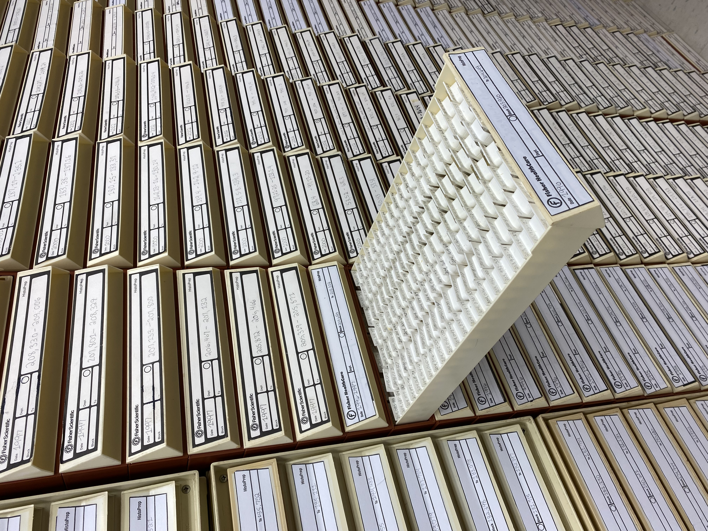
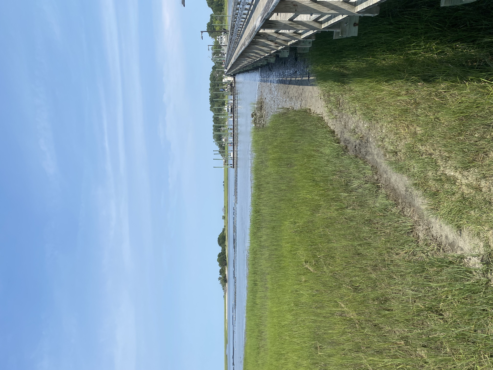
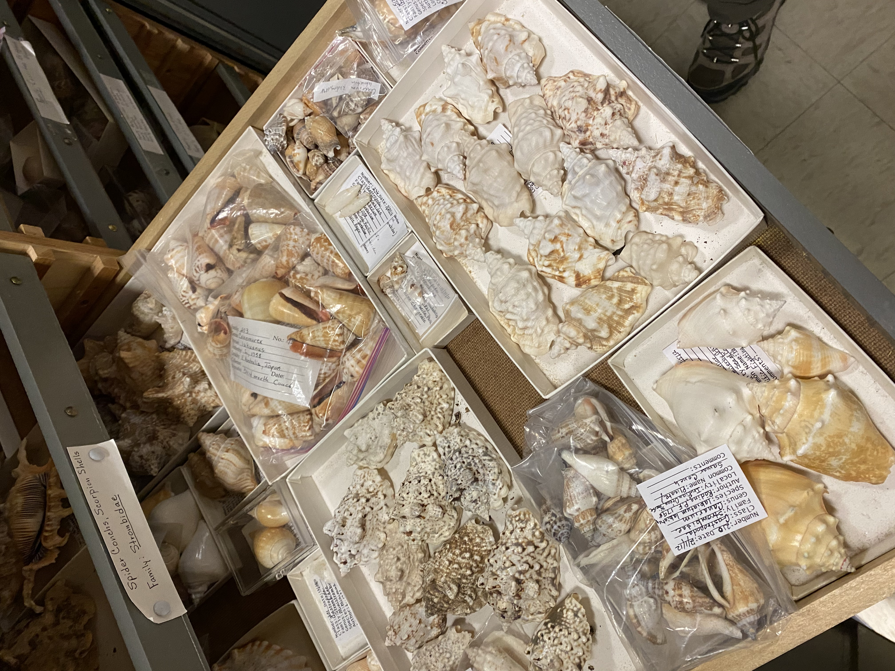
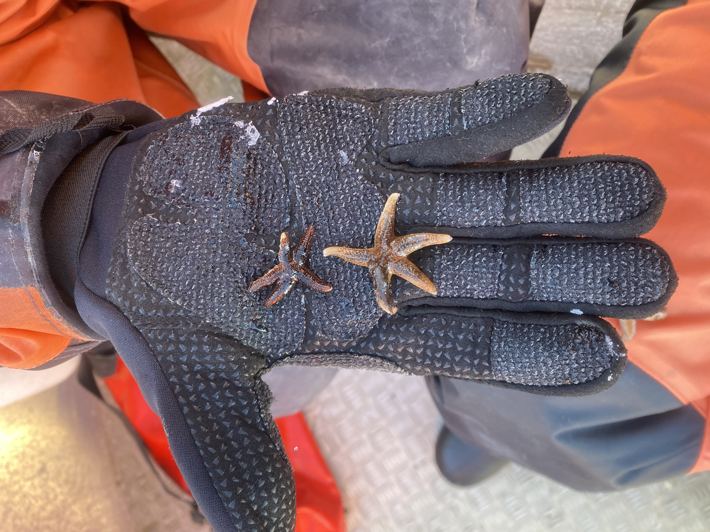
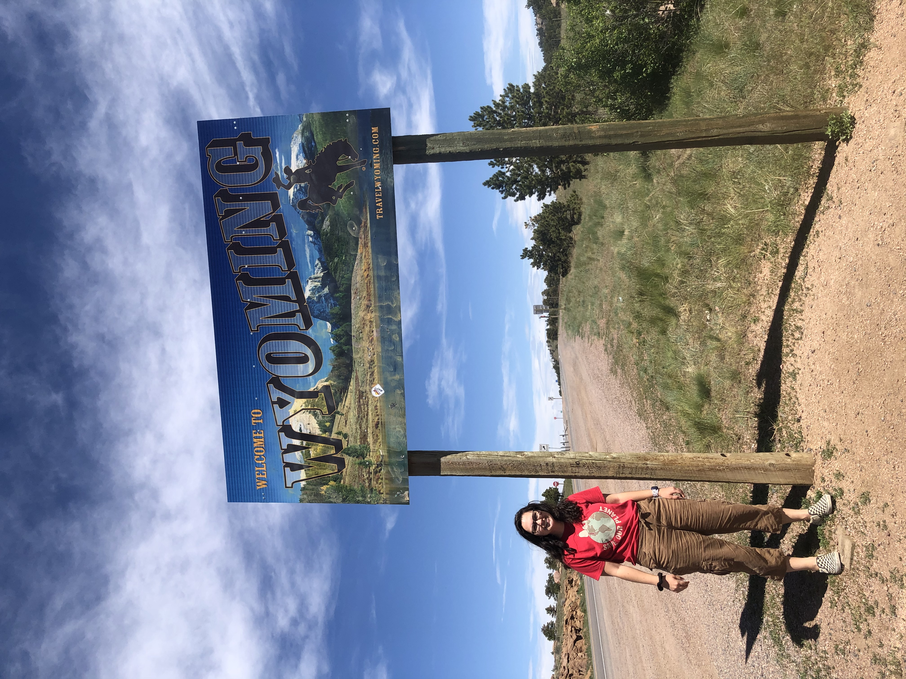

Gallery
PhD Research
Featuring pictures of places I’ve traveled to during my PhD to conduct field work, complete research, or attend conferences or workshops.

{kind=link}
 {group=“research” description=“My lab is located on Nahant, north of Boston in Massachusetts Bay.”}
{group=“research” description=“My lab is located on Nahant, north of Boston in Massachusetts Bay.”}

{kind=link}

{kind=link}

{kind=link}
{kind=link}
{kind=link}
{kind=link}
{kind=link}
Travel and Outdoors
New England
I love to travel regionally from Boston for camping and hiking. Some of my favorite places are the White Mountains in New Hampshire, coastal New England, and the Berkshires in western MA, where I went to undergrad. ::: {layout=“[[1, 1]]”}

{kind=link}
:::
Southwest and Rocky Mountains
I traveled to many of these places during my gap year after finishing undergrad. Although COVID disrupted regular travel, I was able to drive extensively across the region for camping and hiking while remotely working.
 {group=“travel” description=“Arches National Park - Utah”}
{group=“travel” description=“Arches National Park - Utah”}
 {group=“travel” description=“Colorado National Monument - Grand Junction”}
{group=“travel” description=“Colorado National Monument - Grand Junction”}
 {group=“travel” description=“Hoodoos”}
{group=“travel” description=“Hoodoos”}

{kind=link}
Home
I am currently located in Boston for my PhD. I’m originally from south-central Pennsylvania, and I enjoy spending time in South Carolina with family too.